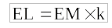
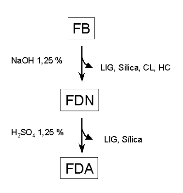
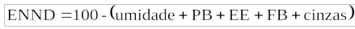
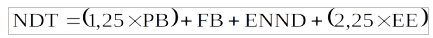
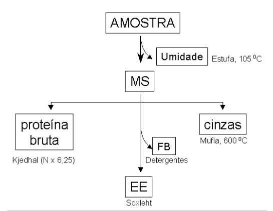
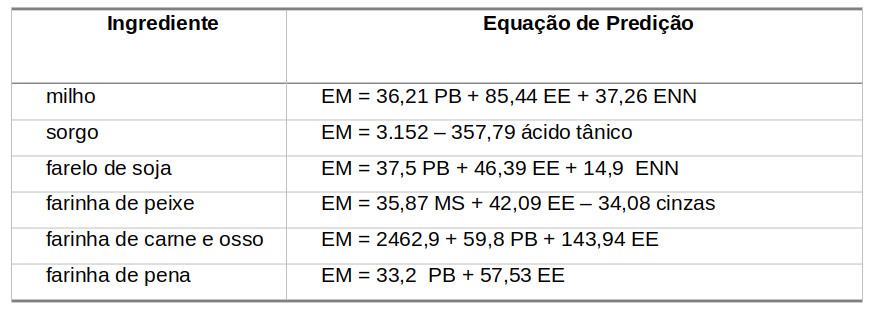

46 Parâmetros Energéticos em Nutrição Animal
46.1 Introdução
Em produção animal, quando se deseja avaliar o aproveitamento energético de volumosos ou concentrados, forragens, gramíneas ou silagens pelos animais, as relações de entalpia e energia livre se tornam de pouca praticidade frente a enorme variabilidade de processos digestivos, interação entre nutrientes, absorção diferencial entre animais de um mesmo rebanho, plausibilidade de fatores anti-nutricionais, e inexistência de informação completa sobre os constituintes da dieta.
Dessa forma, há que se buscar outras relações matemáticas que possam aproximar e aferir o potencial nutricional de determinada dieta direcionada a determinado rebanho.
Das relações mais simples de produtividade pode ser mencionada a conversão alimentar, algebricamente definida como a razão entre a quantidade de alimento ingerida sobre o ganho de peso animal (ou peso de ovos, ou outro parâmetro desejado). Dessa forma:

O aproveitamento líquido do alimento, por sua vez, pode ser definido como a relação entre o que se ingere e o que se elimina (fezes, urina), conforme abaixo:

Outras relações matemáticas podem advir dessas, mas com a limitação inerente do teor energético envolvido nos alimentos, bem como de sua diferença entre os grandes grupos alimentares (carboidratos, proteínas e moléculas aminadas, e lipídios). Para tanto, há de se mensurar a energia total contida nos mais diversos tipos alimentares, bem como nas excretas animais.
Para se conseguir isto, é necessário medir a energia liberada pelos compostos mencionados através de uma bomba calorimétrica (calorimetria de combustão). Através dessa técnica, pode-se conseguir diversas relações energéticas, tal como a energia metabólica aparente (EM), a qual é definida por:
 | Onde:
| Onde:
EB = Energia Bruta (medida por bomba calorimétrica e referências tabuladas)
EBEXCRETADA = EB não digerível, associada à digerível mas não assimilada e às perdas metabólicas (bile, enzimas pancreáticas, descamação celular, etc)
Outra forma de representar a energia metabólica aparente é dada abaixo:

Onde
EDIGERÍVEL = EBALIMENTO - EBFEZES, ou ainda,
(quantidade ingerida de MS x EB ALIMENTO) - (quantidade MS fezes x EBFEZES)
Da ideia de coeficiente de digestibilidade aparente, mencionado acima, pode-se também extrair o coeficiente de digestibilidade de energia bruta, o qual é definido por:

Outras relações energéticas são dadas abaixo:
 , com IC = incremento de calor que, por sua vez, é definido pela somatória do metabolismo basal e a termogênese dietética, ou, matematicamente,
, com IC = incremento de calor que, por sua vez, é definido pela somatória do metabolismo basal e a termogênese dietética, ou, matematicamente,
IC = EM – EL, com EL = energia líquida, definida por
, com k = eficiência parcial utilizada de EM
Todas essas relações matemáticas mencionadas podem ser utilizadas para o cômputo de energias fracionárias na alimentação animal. Adicionalmente, pode-se também avaliar a contribuição de cada grande grupo alimentar, através do isolamento e determinação de carboidratos, proteínas e lipídeos.
Neste caso, são utilizados protocolos experimentais específicos para cada determinação, estabelecidos desde 1854 por Weende. Em síntese, e para qualquer rebanho desejado, determina-se alguns constituintes alimentares abaixo abreviados: MS – matéria seca (forragem) EB – energia bruta PB – proteína bruta EE – extrato etéreo (material lipídico) ENND – extrato não-nitrogenado digerível CARB – carboidratos totais FB – fibra bruta (celulose, hemicelulose, lignina, silício) CL – celulose HC – hemicelulose LIG – lignina
O fracionamento da FB em seus constituintes foi aprimorado a partir de 1965 pelo trabalho desenvolvido por Van Soest, em que uma degradabilidade diferencial entre celulose, hemicelulose, lignina e silício ,é conseguida através do emprego de detergentes básicos e ácidos. As Figuras abaixo exemplificam processos comuns para as determinações.

Após a série de determinações experimentais acima, é possível conceber uma relação matemática final para as contribuições energéticas fracionárias do alimento dado para o animal. Essa relação envolve o conhecimento do extrato não-protéico digerível e de outras frações, dadas como segue. O extrato não-protéico digerível pode ser definido por:
 , em %, ou pode também ser validado por
 , em kg
, em kg
Assim, o valor energético dos alimentos pela sua digestibilidade fracional pode ser normalmente obtido através da seguinte relação:
, com
NDT = nutrientes digeríveis totais PB = proteína bruta digerível FB = fibra bruta digerível ENND = extrato não-nitrogenado di
A equação acima nada mais representa do que a soma dos contribuintes energéticos fracionários de proteínas, carboidratos e lipídeos.
Nesse sentido, como a contribuição energética dos grandes grupos alimentares é distinta, surgem os valores numéricos na equação afim de padronizar os constituintes em relação a energia de carboidratos (1,25 é igual a 5/4, ou 5 kcal/mol em proteína / 4 kcal/mol em carboidratos; 2,25 é igual a 9/4, com raciocínio similar aplicado para lipídios).

Com base na composição bromatológica de diversos alimentos, é possível desenvolver equações de predição para a energia metabolizável, tendo como parâmetros introduzidos, apenas combinações de MS, PB, EE, ENN e cinzas. A Tabela abaixo apresenta algumas destas equações, baseadas nos trabalhos do subcomitê da Federação Européia da Associação Mundial de Ciência Agropecuária de 1989.
